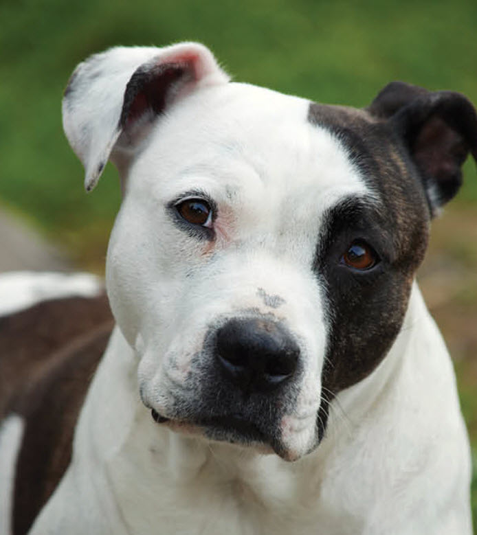
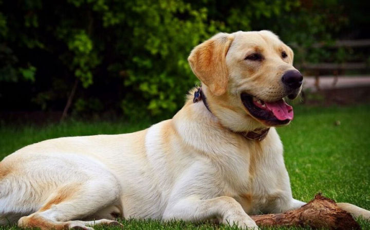

Acerca de Nosotros
- Somos una organización sin fines de lucro con el objetivo de encontrarle un hogar a los cachorros que residen en nuestro local. Nos enfocamos en cuidar a los animales de la mejor manera posible para así encontrarles un dueño que los reciba con los brazos abiertos. Aquí no vienes a adoptar a una simple mascota, vienes a hacer un amigo verdadero.
Nuestros Perros para Adopción


Cómo Ayudar
- Si sus circunstancias lo permiten, puede adoptar alguno de los perros.
- Donando alimentos o juguetes para los cachorros.
- Compartiéndole a su familia y amigos esta página para regar la voz.
- Visitando nuestras redes socials y mostrándonos su apoyo.
Historias de Adopción
- John Doe - Adoptó a uno de nuestros perros recién nacidos en el día de apertura. Hoy en día su mascota ya tiene 5 años y ahora es padre de 3 perritos igual de adorables.
- Jonas Ipaesto - Adoptó un doberman que había sido abandonado debido a lo violento que era jonas decidió ayudarlo a cambiar. Tres años después, Jonas y Rex (doberman) son mejores amigos.
- Imayin Dragnx - Adoptó una chihuahua que le tenía terror a todas las personas, pues fue maltratado anteriormente. Después de 2 años de mucho amor y paciencia, la chihuahua ahora es más feliz que nunca.